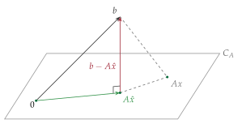
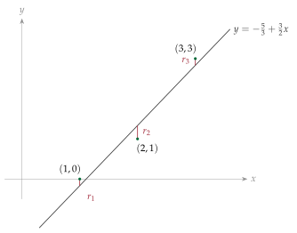

Parcial 2 · Espacios fundamentales, cambio de base y ortogonalidad
El 1 de enero de 1801 el astrónomo italiano Giuseppe Piazzi observó, en la constelación de Tauro, un pequeño punto luminoso que nunca antes había sido catalogado. Lo siguió durante unas semanas y comprobó que se movía entre las estrellas: era un cuerpo del sistema solar (hoy sabemos que el primer asteroide, Ceres). Pero a finales de año el objeto se perdió en el resplandor del Sol y ninguno de los cálculos de la época logró predecir dónde reaparecería. Carl F. Gauss reunió las pocas observaciones disponibles, todas ellas afectadas por errores de medida, supuso una órbita elíptica y desarrolló un método para hallar la órbita que mejor se ajustaba a los datos aunque ninguna órbita pasara exactamente por todos ellos. Los astrónomos apuntaron sus telescopios donde Gauss lo indicó y encontraron a Ceres. Ese método es el de los mínimos cuadrados, y su núcleo es un problema de álgebra lineal: qué hacer con un sistema Ax=b que no tiene solución.
La respuesta es geométrica. Como no podemos lograr Ax=b, buscamos el x que hace que Ax quede lo más cerca posible de b, y «lo más cerca posible» significa mínima distancia, que es una noción de perpendicularidad y proyección. Por eso el capítulo tiene dos partes que se explican mutuamente. En la primera resolvemos el problema de mínimos cuadrados con lo que ya sabemos de Rn (producto punto, complemento ortogonal, proyección ortogonal). En la segunda observamos que toda esa maquinaria depende solo de cinco propiedades del producto punto, y la extendemos a espacios vectoriales arbitrarios —polinomios, funciones continuas, matrices— mediante la noción de producto interno.
7.1 Los espacios fundamentales y la ortogonalidad
Recordemos que, para una matriz A de tamaño m×n con renglones r1,…,rm∈Rn y columnas c1,…,cn∈Rm, el espacio renglón es RA=gen{r1,…,rm}⊆Rn, el espacio columna es CA=gen{c1,…,cn}⊆Rm y el espacio nulo es NA={x∈Rn:Ax=0}. Además RA=CAT. Lo que necesitamos ahora es cómo se relacionan estos espacios con el complemento ortogonal.
Teorema 7.1· Espacios fundamentales y ortogonalidad
Sea A una matriz m×n. Entonces
(a)CA y NAT son subespacios ortogonales de Rm, y (CA)⊥=NAT;
(b)RA=CAT y NA son subespacios ortogonales de Rn, y (RA)⊥=NA.
Demostraciónmostrar
Sean c1,…,cn las columnas de A. El renglón j de AT es cjT, de modo que, para y∈Rm, ATy=c1⋅y⋮cn⋅y. Por tanto ATy=0 si y solo si cj⋅y=0 para todo j=1,…,n. Ahora bien, y es ortogonal a todo vector de CA si y solo si es ortogonal a cada generador cj: en un sentido es evidente, y en el otro, si y⋅cj=0 para todo j y v=α1c1+⋯+αncn es un vector cualquiera de CA, entonces y⋅v=α1(y⋅c1)+⋯+αn(y⋅cn)=0. Así y∈(CA)⊥⟺cj⋅y=0∀j⟺ATy=0⟺y∈NAT, lo que prueba (a). Para (b) se aplica (a) a la matriz AT: (CAT)⊥=N(AT)T=NA, y CAT=RA.
Halle CA, CAT, NA y NAT para A=100020000100.
Soluciónintenta primero
Las columnas de A son (1,0,0,0), (2,0,0,0) y (0,1,0,0), luego CA=gen{(1,0,0,0),(0,1,0,0)}⊆R4. Los renglones no nulos son (1,2,0) y (0,0,1), así que CAT=RA=gen{(1,2,0),(0,0,1)}⊆R3.
Para NA: Ax=0 equivale a x1+2x2=0 y x3=0, es decir x=(−2x2,x2,0)=x2(−2,1,0), y entonces NA=gen{(−2,1,0)}. Para NAT: ATy=0 equivale a y1=0, 2y1=0 y y2=0, sin restricción sobre y3,y4; así NAT=gen{(0,0,1,0),(0,0,0,1)}.
Se comprueba el teorema: NAT es ortogonal a CA (los generadores de uno tienen las dos primeras coordenadas nulas, los del otro solo esas), y (−2,1,0) es ortogonal a (1,2,0) y a (0,0,1). Además dimCA+dimNAT=2+2=4=m y dimRA+dimNA=2+1=3=n.
7.2 El problema de mínimos cuadrados
Empecemos por el problema que motivó la teoría, en su versión más pequeña.
¿Cómo hallar una recta y=c0+c1x que «mejor se ajuste» a los puntos (1,0), (2,1) y (3,3)?
Soluciónintenta primero
Si la recta pasara por los tres puntos se tendría c0+c1=0, c0+2c1=1 y c0+3c1=3, es decir, el sistema 111123013F2→F2−F1,F3→F3−F1100112013F3→F3−2F2100110011. La última fila dice 0=1: el sistema no tiene solución, o sea, no existe ninguna recta que contenga los tres puntos. Aun así queremos la recta que pase «lo más cerca posible». Precisemos qué significa esto.
Sea A una matriz m×n y b un vector de Rm. El problema de mínimos cuadrados para Ax=b consiste en hallar un vector x^∈Rn tal que ∥Ax^−b∥≤∥Ax−b∥para todo x∈Rn. Un tal x^ se llama solución por mínimos cuadrados de Ax=b. El vector b−Ax^ es el residuo.
Observación · Qué dice el problema y por qué el caso interesante es el inconsistente
Como ∥Ax−b∥≥0 para todo x, el menor valor concebible es 0, y se alcanza exactamente cuando Ax=b. Recordemos que Ax=b es consistente si y solo si b∈CA, pues Ax es una combinación lineal de las columnas de A con coeficientes x1,…,xn. Por lo tanto: si b∈CA, las soluciones por mínimos cuadrados son precisamente las soluciones de Ax=b; si b∈/CA, el sistema es inconsistente, ∥Ax−b∥>0 para todo x, y el problema de mínimos cuadrados es el que tiene interés. El nombre viene de que ∥Ax−b∥2=∑i((Ax)i−bi)2 es la suma de los cuadrados de los errores de cada ecuación, y minimizar la norma es lo mismo que minimizar esa suma.
Geométricamente, al variar x el vector Ax recorre todo CA, y buscamos el punto de CA más cercano a b. La intuición del plano dice que ese punto es el pie de la perpendicular bajada desde b: es la proyección ortogonal. La figura siguiente ilustra la situación; el teorema siguiente lo demuestra y lo convierte en un sistema de ecuaciones.

El vector de CA más cercano a b es Ax^=proyCAb; el residuo b−Ax^ es perpendicular a CA. Cualquier otro Ax queda más lejos de b (hipotenusa del triángulo rectángulo punteado).
Sea A una matriz m×n y b∈Rm. Un vector x^∈Rn es solución por mínimos cuadrados de Ax=b si y solo si es solución del sistema ATAx=ATb,(7.1) llamado sistema de ecuaciones normales. En particular, el problema de mínimos cuadrados siempre tiene al menos una solución, y todas las soluciones producen el mismo vector Ax^=proyCAb.
Demostraciónmostrar
Sea p=proyCAb la proyección ortogonal de b sobre el subespacio CA de Rm. Por el teorema de la proyección ortogonal, p∈CA y el residuo r=b−p pertenece a (CA)⊥; por el Teorema 7.1, (CA)⊥=NAT, es decir, ATr=0.(∗)
Paso 1: p es el vector de CA más cercano a b. Sea x∈Rn cualquiera. Escribimos Ax−b=(Ax−p)−r. El vector Ax−p está en CA (diferencia de dos vectores de CA) y r∈(CA)⊥, luego (Ax−p)⋅r=0. Por el teorema de Pitágoras, ∥Ax−b∥2=∥Ax−p∥2+∥r∥2≥∥r∥2=∥p−b∥2.(7.2) La igualdad ∥Ax−b∥=∥r∥ vale si y solo si ∥Ax−p∥=0, esto es, si y solo si Ax=p. Como p∈CA, existe al menos un x con Ax=p (los coeficientes de p como combinación lineal de las columnas). Para ese x la desigualdad (7.2) es una igualdad, y por tanto: x es solución por mínimos cuadrados si y solo si Ax=p. Esto prueba la existencia y que Ax^=p para toda solución.
Paso 2: Ax=p si y solo si ATAx=ATb. Si Ax=p, entonces AT(Ax−b)=AT(p−b)=−ATr=0 por (∗), es decir, ATAx=ATb. Recíprocamente, supongamos AT(Ax−b)=0. Entonces Ax−b∈NAT=(CA)⊥, y también r∈(CA)⊥, de modo que Ax−p=(Ax−b)+(b−p)=(Ax−b)+r∈(CA)⊥. Pero Ax−p también está en CA, y el único vector de CA∩(CA)⊥ es el vector cero (si v está en ambos, v⋅v=0). Luego Ax=p.
Combinando los pasos 1 y 2, x^ minimiza ∥Ax−b∥ si y solo si ATAx^=ATb.
El argumento tiene una lectura sencilla que conviene retener: la ecuación AT(Ax^−b)=0 dice que el residuo es ortogonal a todas las columnas de A, y eso es exactamente la condición de perpendicularidad de la figura anterior.
Sea A una matriz m×n. Si las columnas de A son linealmente independientes (es decir, si el rango de A es n), entonces ATA es una matriz n×n invertible. En ese caso el problema de mínimos cuadrados Ax=b tiene una única solución, dada por x^=(ATA)−1ATb.
Demostraciónmostrar
La matriz ATA es cuadrada de tamaño n×n. Basta probar que su espacio nulo es {0}. Sea x∈Rn con ATAx=0. Multiplicando por xT por la izquierda, 0=xTATAx=(Ax)T(Ax)=∥Ax∥2, así que Ax=0. Como las columnas de A son linealmente independientes, Ax=x1c1+⋯+xncn=0 obliga a x=0. Por tanto NATA={0}, y una matriz cuadrada con espacio nulo trivial es invertible.
Entonces la ecuación normal (7.1) se resuelve de manera única multiplicando por (ATA)−1: x^=(ATA)−1ATb. Por el Teorema 7.3 esa es la única solución por mínimos cuadrados.
Si las columnas de A son dependientes, ATA no es invertible (la prueba anterior muestra que NATA=NA={0}) y las ecuaciones normales tienen infinitas soluciones. Todas ellas siguen siendo soluciones por mínimos cuadrados, y todas difieren en un elemento de NA, de modo que el vector aproximante Ax^=proyCAb es siempre el mismo. En los ajustes de datos que veremos, las columnas son independientes.
Ejemplo 7.3· La recta de mínimos cuadrados para (1,0), (2,1), (3,3)
Resuelva el problema de mínimos cuadrados del Ejemplo 7.2.
Estrategia.
la recta y=c0+c1x pide c0+c1xi=yi en cada punto; eso es Ax=b con una columna de unos y otra con las abscisas.
Soluciónintenta primero
Ponemos A=111123,x=(c0c1),b=013. Las columnas de A son independientes (no son proporcionales), así que por el Teorema 7.4 hay una única solución. Calculamos ATA=(111213)111123=(36614),ATb=(111213)013=(411). Las ecuaciones normales son 3c0+6c1=4, 6c0+14c1=11. Con F2→F2−2F1: (36614411)→(306243), de donde c1=23 y 3c0=4−6⋅23=−5, o sea c0=−35. La recta de mínimos cuadrados es y=−35+23x.Comprobación del residuo. Los valores ajustados son Ax^=(−61,34,617), luego el residuo es b−Ax^=(61,−31,61). En efecto es ortogonal a las dos columnas de A: 61−31+61=0 y 61−32+21=0. El error mínimo es ∥b−Ax^∥2=361+91+361=61.

Recta de mínimos cuadrados del Ejemplo 7.3. Los segmentos rojos son los residuos verticales ri=yi−(c0+c1xi): la recta minimiza la suma de sus cuadrados.
Los residuos verticales de la figura son las componentes del vector b−Ax^, y ∥b−Ax^∥2=r12+r22+r32. Entre todas las rectas y=c0+c1x, la de mínimos cuadrados es la que hace menor esa suma. Por otra parte, como la primera columna de A es (1,…,1), la ortogonalidad del residuo a esa columna dice que r1+r2+r3=0: los errores por exceso y por defecto se compensan. Así ocurre siempre que el modelo incluye un término constante.
El ejemplo se generaliza sin cambios. Dados los datos (x1,y1),…,(xn,yn) y un modelo polinomial y=c0+c1x+⋯+cmxm, imponer que cada punto cumpla el modelo da el sistema c0+c1xi+⋯+cmxim=yi, i=1,…,n, es decir Ax=b con A=11⋮1x1x2⋮xnx12x22⋮xn2⋯⋯⋯x1mx2m⋮xnm,x=c0c1⋮cm,b=y1y2⋮yn.
Procedimiento de ajuste polinomial por mínimos cuadrados. Para los datos (x1,y1),…,(xn,yn) con al menos m+1 abscisas distintas (m≤n−1): (1) construya A y b como arriba; (2) resuelva por Gauss-Jordan las ecuaciones normales ATAx=ATb; (3) el polinomio buscado es y=c0+c1x+⋯+cmxm. Para m=1 se obtiene la recta de mínimos cuadrados, y A es n×2 con columnas (1,…,1) y (x1,…,xn).
La hipótesis sobre las abscisas garantiza que las columnas de A son independientes, y entonces el Teorema 7.4 asegura solución única. En efecto, si Ax=0 entonces el polinomio c0+c1t+⋯+cmtm, de grado a lo sumo m, se anula en m+1 valores distintos de t; un polinomio no nulo de grado a lo sumo m tiene a lo sumo m raíces, así que es el polinomio cero y c0=⋯=cm=0.
Encuentre la parábola que ofrezca la mejor aproximación por mínimos cuadrados a los puntos (−1,1), (0,−1), (1,0) y (2,2).
Soluciónintenta primero
Buscamos y=c0+c1x+c2x2. La tabla de datos y las matrices son xy−110−11022A=1111−10121014,b=1−102. Entonces ATA=1−111001111241111−10121014=4262686818,ATb=239. (Por ejemplo, la entrada (3,3) es 1+0+1+16=18 y la tercera componente de ATb es 1⋅1+0⋅(−1)+1⋅0+4⋅2=9.) Las ecuaciones normales son 4262686818239. Dividimos la primera fila entre 2 y restamos: con E1:2c0+c1+3c2=1, la segunda ecuación menos E1 da 5c1+5c2=2 y la tercera menos 3E1 da 5c1+9c2=6. Restando estas dos, 4c2=4, luego c2=1; entonces c1=52−1=−53 y c0=21(1−c1−3c2)=21(1+53−3)=−107. La reducción de Gauss-Jordan completa lleva la matriz aumentada a 100010001−7/10−3/51, y la parábola es y=−107−53x+x2. Los valores ajustados son (109,−107,−103,1021), el residuo es (101,−103,103,−101), cuya suma es 0 y cuyo cuadrado de la norma es 51.
Ejemplo 7.5· Crecimiento exponencial: un modelo linealizado
La tabla presenta el número de infectados por SARS-CoV-2 en Colombia en los primeros días de la pandemia, en marzo de 2020. Si se supone un modelo de crecimiento exponencial, encuentre la tasa de crecimiento relativa y estime el número de infectados para el 25 de marzo. DıˊaInfectados1316142415451657177518102
Estrategia.
el modelo y=Cekt no es lineal en C y k, pero al tomar logaritmo queda lny=lnC+kt, que es una recta.
Soluciónintenta primero
Sea t=dıˊa−13 (así t=0,…,5) y z=lny. Si y=Cekt, entonces z=c0+c1t con c0=lnC y c1=k. Los datos transformados son tz=lny02,772613,178123,806734,043144,317554,6250 Con A de columnas (1,…,1) y (0,1,…,5), y b=(z0,…,z5): ATA=(6151555),ATb=(∑zi∑tizi)≈(22,742863,3153). Como det(ATA)=6⋅55−152=105, se tiene (c0c1)=1051(55−15−156)(22,742863,3153)≈(2,86790,3690). Por tanto k≈0,369 por día (un crecimiento relativo de e0,369−1≈44,6% diario) y C=e2,8679≈17,6, es decir, y≈17,6e0,369t. El 25 de marzo corresponde a t=12, y el modelo da y≈17,6e4,428≈1475 infectados.
Advertencia sobre el ajuste exponencial
Los mínimos cuadrados del Ejemplo 7.5 minimizan el error en lny, no el error en y; es un modelo distinto del que se obtendría ajustando directamente Cekt. Además, extrapolar (aquí, doce días adelante de datos que cubren seis) es muy sensible al valor de k: un error de una centésima en k cambia la predicción en cerca de un 13 %. Interprete siempre los resultados de un ajuste dentro de los límites de validez del modelo.
Ejercicios propuestos
Halle la recta de mínimos cuadrados para (0,1), (1,3), (2,4), (3,4) y verifique que el residuo es ortogonal a las dos columnas de A.
Demuestre que si A tiene columnas independientes, entonces A(ATA)−1AT es la matriz de la proyección ortogonal sobre CA.
Sea A de tamaño m×n. Demuestre que NATA=NA y deduzca que ATA y A tienen el mismo rango.
InteractivoMínimos cuadrados con tus propios datos
Arrastra los puntos, agrega o quita, y cambia el modelo. Los cuadraditos son los residuos.
7.3 Espacios con producto interno
En las pruebas anteriores intervinieron varias veces el producto punto y la norma: para hablar de perpendicularidad, del teorema de Pitágoras y de proyecciones. Nada de eso es exclusivo de Rn. Tiene sentido pedir que un polinomio sea «perpendicular» a otro, o hablar de la «distancia» entre dos funciones, siempre que tengamos una operación que se comporte como el producto punto. La forma de identificar esa operación es axiomática.
Un producto interno en un espacio vectorial real V es una función que a cada par de vectores u,v∈V le asigna un número real ⟨u,v⟩ y que cumple, para todos u,v,w∈V y todo escalar c∈R:
(a) (simetría) ⟨u,v⟩=⟨v,u⟩;
(b) (aditividad) ⟨u,v+w⟩=⟨u,v⟩+⟨u,w⟩;
(c) (homogeneidad) c⟨u,v⟩=⟨cu,v⟩;
(d) (no negatividad) ⟨v,v⟩≥0;
(e) (definición) ⟨v,v⟩=0 si y solo si v=0.
Un espacio vectorial en el que se ha fijado un producto interno se llama espacio con producto interno.
Las propiedades (d) y (e) suelen reunirse diciendo que el producto interno es definido positivo. Un mismo espacio vectorial admite productos internos distintos; lo que sigue son ejemplos, y uno de ellos es un intento fallido para ver dónde falla.
(e) Si v12+2v22=0, como ambos sumandos son no negativos, v12=0 y v22=0, luego v=0; y ⟨0,0⟩=0.
Con este producto, (1,0) y (0,1) siguen siendo ortogonales, pero ∥(0,1)∥=2: la «longitud» de un vector depende del producto interno elegido. Igualmente ⟨u,v⟩=a1u1v1+⋯+anunvn es un producto interno en Rn para cualesquiera pesos a1,…,an>0.
Ejemplo 7.8· Una función que no es producto interno
Demuestre que ⟨u,v⟩=u1v1−2u2v2+u3v3, definida para u,v∈R3, no es un producto interno.
Soluciónintenta primero
Basta que falle un axioma. Tomemos u=(0,1,0). Entonces ⟨u,u⟩=0⋅0−2⋅1⋅1+0⋅0=−2<0, de modo que no se cumple (d). (Los axiomas (a), (b) y (c) sí se cumplen, pero uno solo que falle basta.)
Ejemplo 7.9· Producto interno en Mm×n con la traza
En el espacio Mm×n de matrices reales m×n se define ⟨A,B⟩=tr(ATB). Demuestre que es un producto interno y que, en M2×2, coincide con ⟨A,B⟩=a11b11+a21b21+a12b12+a22b22.
Soluciónintenta primero
Primero calculamos la traza. La entrada (j,k) de ATB es ∑i=1maijbik, luego tr(ATB)=∑j=1n∑i=1maijbij: es la suma de los productos de las entradas correspondientes, como el producto punto de las matrices «desenrolladas» en un vector de Rmn. Para 2×2 esto es exactamente a11b11+a21b21+a12b12+a22b22. Verificamos los axiomas con esta fórmula:
(a) ⟨A,B⟩=∑aijbij=∑bijaij=⟨B,A⟩.
(b) ⟨A,B+C⟩=∑aij(bij+cij)=⟨A,B⟩+⟨A,C⟩.
(c) ⟨cA,B⟩=∑caijbij=c⟨A,B⟩.
(d) ⟨A,A⟩=∑aij2≥0.
(e) ∑aij2=0 si y solo si todas las aij son cero, es decir, A=0.
Ejemplo 7.10· Producto interno en Pn mediante los coeficientes
En Pn, para p(x)=a0+a1x+⋯+anxn y q(x)=b0+b1x+⋯+bnxn, demuestre que ⟨p,q⟩=a0b0+a1b1+⋯+anbn define un producto interno. Calcule ⟨1+x2,3−2x+2x2⟩.
Soluciónintenta primero
La función ⟨p,q⟩ es el producto punto de los vectores de coeficientes (a0,…,an) y (b0,…,bn). Como p+q y cp tienen por coeficientes ai+bi y cai, los cinco axiomas se reducen a los del Ejemplo 7.6: simetría, aditividad y homogeneidad porque las operaciones de Pn se hacen coeficiente a coeficiente; ⟨p,p⟩=∑ai2≥0, con igualdad solo si todos los coeficientes son nulos, esto es, p=0.
Para el cálculo, p=1+x2 tiene a0=1, a1=0, a2=1 y q=3−2x+2x2 tiene b0=3, b1=−2, b2=2. Entonces ⟨p,q⟩=1⋅3+0⋅(−2)+1⋅2=5.
Ejemplo 7.11· Producto interno definido por una integral en C[a,b]
Sea C[a,b] el espacio de las funciones continuas f:[a,b]→R. Demuestre que ⟨f,g⟩=∫abf(x)g(x)dx es un producto interno en C[a,b]. Calcule ⟨1,cos(πx)⟩ en C[0,1].
Soluciónintenta primero
La integral existe porque fg es continua en [a,b]. Sean f,g,h∈C[a,b] y c∈R.
(a) ∫abfgdx=∫abgfdx, porque f(x)g(x)=g(x)f(x).
(b) Por la linealidad de la integral, ∫abf(g+h)dx=∫abfgdx+∫abfhdx.
(c) ∫ab(cf)gdx=c∫abfgdx.
(d) ⟨f,f⟩=∫abf(x)2dx≥0, ya que f2≥0 y la integral de una función no negativa es no negativa.
(e) Si f=0, claramente ⟨f,f⟩=0. Recíprocamente, supongamos f=0: existe x0∈[a,b] con f(x0)=0. Por continuidad, existe un intervalo [α,β]⊆[a,b] con α<β, que contiene a x0, en el cual ∣f(x)∣≥21∣f(x0)∣. Entonces ∫abf2dx≥∫αβf2dx≥(β−α)41f(x0)2>0. Luego ⟨f,f⟩=0 implica f=0.
Cálculo. En C[0,1]: ⟨1,cos(πx)⟩=∫01cos(πx)dx. Con u=πx, dx=du/π, y los límites x=0⇒u=0, x=1⇒u=π, ∫01cos(πx)dx=π1∫0πcosudu=π1(senπ−sen0)=0. Es decir, las funciones 1 y cos(πx) son ortogonales respecto de este producto interno.
Si un producto interno cumple los axiomas, estos bastan para deducir las propiedades habituales de la bilinealidad.
Sean u,v,w vectores de un espacio con producto interno V y c un escalar. Entonces
(a)⟨u,0⟩=⟨0,u⟩=0;
(b)⟨u+v,w⟩=⟨u,w⟩+⟨v,w⟩;
(c)⟨u,cv⟩=c⟨u,v⟩.
Demostraciónmostrar
(b) Por simetría (a), aditividad (b) y simetría otra vez: ⟨u+v,w⟩=⟨w,u+v⟩=⟨w,u⟩+⟨w,v⟩=⟨u,w⟩+⟨v,w⟩.
(c) ⟨u,cv⟩=⟨cv,u⟩=c⟨v,u⟩=c⟨u,v⟩, usando simetría, homogeneidad y simetría.
(a) Como 0=0⋅0 (el vector cero es 0 veces el vector cero), por (c) del Teorema 7.6 recién probada, ⟨u,0⟩=⟨u,0⋅0⟩=0⋅⟨u,0⟩=0; y por simetría ⟨0,u⟩=0.
En resumen, el producto interno es lineal en cada una de sus dos entradas.
Norma, distancia, ángulo y ortogonalidad
Definición 7.7· Norma, distancia, ángulo y ortogonalidad
Sean u,v vectores de un espacio con producto interno V.
(a) La norma o longitud de u es ∥u∥=⟨u,u⟩.
(b) La distancia entre u y v es d(u,v)=∥v−u∥.
(c) Si u,v=0, el ánguloθ∈[0,π] entre u y v se define por cosθ=∥u∥∥v∥⟨u,v⟩.
(d) Los vectores u y v son ortogonales si ⟨u,v⟩=0.
La norma está bien definida por (d) y la raíz existe; por (e), ∥u∥=0 si y solo si u=0. Un vector con ∥v∥=1 se llama unitario, y si v=0 el vector v/∥v∥ es unitario y apunta en la dirección de v, pues ∥v/∥v∥∥2=⟨∥v∥v,∥v∥v⟩=∥v∥21⟨v,v⟩=1 (usando el Teorema 7.6(c) y la homogeneidad). La definición (c) solo tiene sentido si el cociente cae en [−1,1]; eso lo garantiza el teorema de Cauchy-Schwarz que veremos en seguida. Nótese que d(u,v)=d(v,u) porque ∥−w∥=∥w∥ (por la homogeneidad, ⟨−w,−w⟩=⟨w,w⟩).
Ejemplo 7.12· Cálculos en P2 con el producto de coeficientes
Sean p(x)=1−2x2, q(x)=4−2x+x2 y r(x)=x+2x2 en P2, con ⟨p,q⟩=a0b0+a1b1+a2b2. Calcule (a) ⟨p,q⟩, (b) ⟨q,r⟩, (c) ∥q∥, (d) d(p,q).
Soluciónintenta primero
Los vectores de coeficientes son p=(1,0,−2), q=(4,−2,1), r=(0,1,2).
(a) ⟨p,q⟩=1⋅4+0⋅(−2)+(−2)⋅1=2.
(b) ⟨q,r⟩=4⋅0+(−2)⋅1+1⋅2=0, así que q y r son ortogonales.
(c) ∥q∥=42+(−2)2+12=21.
(d) q−p=(3,−2,3), es decir, 3−2x+3x2, y d(p,q)=∥q−p∥=9+4+9=22.
Sean f(x)=x y g(x)=x2 en C[0,1] con el producto interno de la integral. Calcule (a) ∥f∥ y (b) d(f,g).
Soluciónintenta primero
(a) ∥f∥2=∫01x2dx=31, luego ∥f∥=31=33.
(b) g−f=x2−x, así que d(f,g)2=∫01(x2−x)2dx=∫01(x4−2x3+x2)dx=5x5−2x4+3x301=51−21+31=306−15+10=301. Por tanto d(f,g)=301=3030.
Los tres resultados siguientes son la base de toda la geometría métrica; por eso los demostramos usando únicamente los axiomas y el Teorema 7.6. Precisamente por eso valen, con las mismas pruebas, tanto en Rn con el producto punto como en Pn, Mm×n o C[a,b] con los productos de arriba.
Para todos u,v en un espacio con producto interno V, ∣⟨u,v⟩∣≤∥u∥∥v∥, y la igualdad se da si y solo si u y v son linealmente dependientes.
Demostraciónmostrar
Si v=0, ambos lados son 0 (Teorema 7.6(a)) y u,v son dependientes; supongamos v=0. Para todo t∈R, por (d), 0≤⟨u−tv,u−tv⟩=⟨u,u⟩−2t⟨u,v⟩+t2⟨v,v⟩, donde se usó el Teorema 7.6 para expandir y la simetría para agrupar ⟨u,v⟩ y ⟨v,u⟩. Tomamos t=⟨u,v⟩/⟨v,v⟩ (posible, pues ⟨v,v⟩>0 por (e)): 0≤∥u∥2−2∥v∥2⟨u,v⟩2+∥v∥2⟨u,v⟩2=∥u∥2−∥v∥2⟨u,v⟩2. Multiplicando por ∥v∥2>0 se obtiene ⟨u,v⟩2≤∥u∥2∥v∥2, y sacando raíces, la desigualdad.
Si hay igualdad, la cadena anterior da ⟨u−tv,u−tv⟩=0, luego u−tv=0 por (e), y u=tv es dependiente de v. Recíprocamente, si u=tv, entonces ∣⟨u,v⟩∣=∣t∣∥v∥2=∥tv∥∥v∥=∥u∥∥v∥.
Para todos u,v en un espacio con producto interno, ∥u+v∥≤∥u∥+∥v∥.
Demostraciónmostrar
Por el Teorema 7.6, ∥u+v∥2=⟨u+v,u+v⟩=∥u∥2+2⟨u,v⟩+∥v∥2. Por Cauchy-Schwarz, ⟨u,v⟩≤∣⟨u,v⟩∣≤∥u∥∥v∥; entonces ∥u+v∥2≤∥u∥2+2∥u∥∥v∥+∥v∥2=(∥u∥+∥v∥)2. Como ambos lados de la desigualdad de las normas son no negativos, se extrae la raíz.
De la desigualdad triangular se obtiene que d(u,w)≤d(u,v)+d(v,w) (aplicándola a v−u y w−v), además de d(u,v)≥0, d(u,v)=0⇔u=v y d(u,v)=d(v,u). Así, todo espacio con producto interno es un espacio métrico.
Proyección ortogonal y el proceso de Gram-Schmidt
Los resultados del capítulo anterior sobre conjuntos ortogonales, proyección y el proceso de Gram-Schmidt se demostraron usando solo los axiomas (a)–(e), la linealidad y la definición de norma; jamás se usó que los vectores fueran n-adas ni que el producto fuera una suma de productos de coordenadas. Por eso son válidos, palabra por palabra, en cualquier espacio con producto interno. Para tenerlos completos y comprobar que es así, los enunciamos en ese marco y damos las pruebas.
Un conjunto {w1,…,wk} de vectores no nulos es ortogonal si ⟨wi,wj⟩=0 para i=j, y ortonormal si además ∥wi∥=1. Dado un subespacio W de V, su complemento ortogonal es W⊥={v∈V:⟨v,w⟩=0para todow∈W}.
Teorema 7.11· Proyección sobre un subespacio con base ortogonal
(a) Todo conjunto ortogonal de vectores no nulos es linealmente independiente.
(b) Sea W un subespacio de V con base ortogonal {w1,…,wk}. Para todo v∈V, el vector proyWv=⟨w1,w1⟩⟨v,w1⟩w1+⋯+⟨wk,wk⟩⟨v,wk⟩wk pertenece a W y v−proyWv∈W⊥.
(c) (Mejor aproximación) proyWv es el vector de W más cercano a v: ∥v−proyWv∥≤∥v−w∥ para todo w∈W, con igualdad solo si w=proyWv.
Demostraciónmostrar
(a) Si α1w1+⋯+αkwk=0, tomando producto interno con wj y usando la linealidad, 0=⟨0,wj⟩=∑iαi⟨wi,wj⟩=αj⟨wj,wj⟩. Como ⟨wj,wj⟩>0, αj=0 para todo j.
(b) Es claro que p=proyWv∈W. Para cada j, ⟨v−p,wj⟩=⟨v,wj⟩−∑i⟨wi,wi⟩⟨v,wi⟩⟨wi,wj⟩=⟨v,wj⟩−⟨v,wj⟩=0. Como todo w∈W es combinación lineal de los wj, ⟨v−p,w⟩=0.
(c) Sea w∈W. Entonces v−w=(v−p)+(p−w), con v−p∈W⊥ y p−w∈W, así que son ortogonales y, por el teorema de Pitágoras, ∥v−w∥2=∥v−p∥2+∥p−w∥2≥∥v−p∥2, con igualdad si y solo si ∥p−w∥=0, es decir, w=p.
Nótese que la parte (c) es, punto por punto, el Paso 1 de la demostración del Teorema 7.3: el problema de mínimos cuadrados es el problema de mejor aproximación en el subespacio W=CA de Rm, y la aproximación de funciones por polinomios (ver el ejercicio al final del capítulo) es el mismo problema en C[a,b].
Falta saber si todo subespacio tiene una base ortogonal. El proceso de Gram-Schmidt la construye.
Sea {v1,…,vk} una base de un subespacio W de un espacio con producto interno. Definamos w1wj=v1,=vj−i=1∑j−1⟨wi,wi⟩⟨vj,wi⟩wi,j=2,…,k. Entonces {w1,…,wk} es una base ortogonal de W y, para cada j, gen{w1,…,wj}=gen{v1,…,vj}. Los vectores uj=wj/∥wj∥ forman una base ortonormal de W.
Demostraciónmostrar
Se procede por inducción en j, probando que w1,…,wj son no nulos, mutuamente ortogonales y generan lo mismo que v1,…,vj. Para j=1 es inmediato, pues w1=v1=0.
Supongamos cierto el enunciado para j−1 y sea Wj−1=gen{v1,…,vj−1}=gen{w1,…,wj−1}. El vector wj=vj−proyWj−1vj, porque {w1,…,wj−1} es una base ortogonal de Wj−1 (hipótesis de inducción y Teorema 7.11(a)). Por el Teorema 7.11(b), wj∈Wj−1⊥, luego wj es ortogonal a w1,…,wj−1. Además wj=0: si fuera wj=0, vj=proyWj−1vj∈Wj−1=gen{v1,…,vj−1}, contradiciendo la independencia de los vi. Finalmente, de la definición, wj∈gen{w1,…,wj−1,vj}⊆gen{v1,…,vj} y vj∈gen{w1,…,wj}; los dos espacios coinciden. Esto completa la inducción, y {w1,…,wk} es un conjunto ortogonal de k vectores no nulos que genera W (independiente por el Teorema 7.11(a)), luego una base.
Por último ∥uj∥=∥wj∥/∥wj∥=1, y dividir por un escalar no cambia las ortogonalidades ni el espacio generado.
Ejemplo 7.14· Gram-Schmidt en P2 con el producto interno de la integral
En P2 (que es subespacio de C[0,1]) consideramos ⟨p,q⟩=∫01p(x)q(x)dx. Aplique Gram-Schmidt a la base {1,x,x2}.
Soluciónintenta primero
Usaremos ∫01xkdx=k+11. Sean v1=1, v2=x, v3=x2.
Primer vector.w1=1 y ⟨w1,w1⟩=∫011dx=1.
Segundo vector.⟨v2,w1⟩=∫01xdx=21. Entonces w2⟨w2,w2⟩=x−11/2⋅1=x−21,=∫01(x−21)2dx=3(x−1/2)301=31(81+81)=121.Tercer vector.⟨v3,w1⟩=∫01x2dx=31 y ⟨v3,w2⟩=∫01x2(x−21)dx=∫01(x3−21x2)dx=41−61=121. Por tanto w3=x2−11/3⋅1−1/121/12(x−21)=x2−31−x+21=x2−x+61, y ⟨w3,w3⟩=∫01(x2−x+61)2dx=∫01(x4−2x3+34x2−31x+361)dx=51−21+94−61+361=18036−90+80−30+5=1801. (El desarrollo del cuadrado es x4+x2+361−2x3+31x2−31x.) Así {1,x−21,x2−x+61} es una base ortogonal de P2.
Verificación.⟨w1,w3⟩=∫01(x2−x+61)dx=31−21+61=0 y ⟨w2,w3⟩=∫01(x−21)(x2−x+61)dx=∫01(x3−23x2+32x−121)dx=41−21+31−121=0.
Normalización.∥w1∥=1, ∥w2∥=121, ∥w3∥=1801; por tanto u1u3=1,u2=12(x−21)=3(2x−1),=180(x2−x+61)=5(6x2−6x+1) es una base ortonormal de P2 respecto de este producto interno.
Observe cómo el resultado depende del producto interno: con el producto de los coeficientes del Ejemplo 7.10 la base {1,x,x2} ya es ortonormal y Gram-Schmidt no cambia nada.
El vector w3 es el error de aproximar x2 por polinomios de grado menor o igual que 1 en el sentido de la integral: proyP1x2=31+(x−21)=x−61, y es el polinomio lineal que minimiza ∫01(x2−(a+bx))2dx, con error mínimo ∥w3∥2=1801. Es el mismo problema de mínimos cuadrados de la primera parte, pero con integrales en lugar de sumas.
Ejercicios propuestos
Demuestre que ⟨p,q⟩=p(0)q(0)+p(1)q(1)+p(2)q(2) es un producto interno en P2, pero no en P3.
En C[−1,1] con el producto de la integral, aplique Gram-Schmidt a {1,x,x2} y compruebe que obtiene 1, x, x2−31.
En M2×2 con ⟨A,B⟩=tr(ATB), halle la proyección ortogonal de (1324) sobre el subespacio de las matrices simétricas.
Halle la recta y=a+bx que mejor aproxima a f(x)=ex en C[0,1] en el sentido de la norma de la integral.
✦Practica activa
Dos retos para afianzar las ideas del capítulo: arma la demostración con los bloques en el orden correcto y caza el paso falso de un argumento.
🧩 Ordena la soluciónEcuaciones normales
Halle la solución por mínimos cuadrados de Ax=b con A=111012, b=(1,2,4)T.
🔍 Encuentra el errorProducto interno sospechoso
Se afirma que ⟨u,v⟩=u1v1−u2v2 es un producto interno en R2.